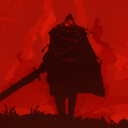

Bell Bearer
Dashboard
−
1x
+
1x
Download
Start a party
Join
Open the reader
⏱
Select a video to see its checkpoints
How to use
Hold
Ctrl + B
while watching to drop a checkpoint.
>
<
step speed,
+
resets.